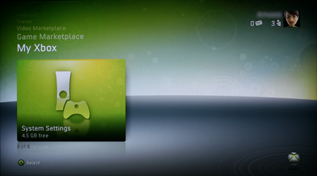
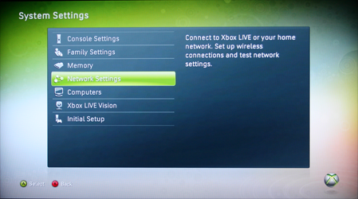
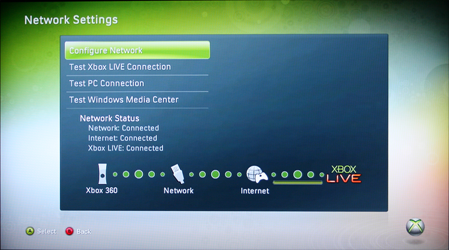
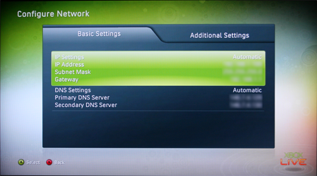
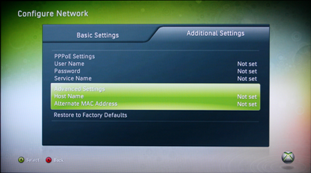
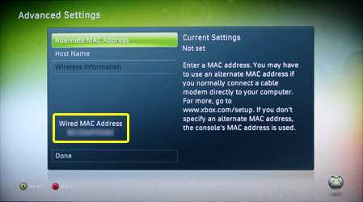

Xbox 360 Register
- Go to the System Settings area of the My Xbox Channel. 
- Select Network Settings. 
- Select the Configure Network option. 
- Under the Basic Settings ensure the IP Address and DNS Settings are set to Automatic. 
- Select Additional Settings and then view Advanced Settings. 
- At the bottom of this screen you'll see a heading called Wired MAC Address. 
- Now that you have found your MAC address, you can now register your console.